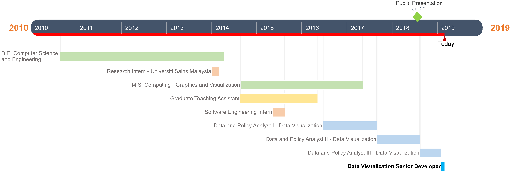

I am a senior data visualization and front end developer working with a not-for-profit health care policy analyses firm - The SPHERE Institute (Acumen, LLC) in Burlingame, California for about 3 years.
I enjoy designing visualizations and web applications to turn incoherent data into clear, compelling and exploratory solutions.
Before moving to California, I graduated with a Master of Science degree in Computing (Graphics and Visualization Track) from the University of Utah.
My liking towards data viz stems from my desire to do two things I have always liked - Computer Science and Art. I like working with pixels and would happily spend hours on them.
I gain inspiration from the works of Mike Bostock, Nadieh Bremer, Scott Murray and many others.
I like adventure vacations, going on Hikes, Rock Climbing (just the indoor kind for now), Kayaking and have recently taken to Skiing!
I am passionate about animals, so bonus points to you if you have a dog!
I enjoy designing visualizations and web applications to turn incoherent data into clear, compelling and exploratory solutions.
Before moving to California, I graduated with a Master of Science degree in Computing (Graphics and Visualization Track) from the University of Utah.
My liking towards data viz stems from my desire to do two things I have always liked - Computer Science and Art. I like working with pixels and would happily spend hours on them.
I gain inspiration from the works of Mike Bostock, Nadieh Bremer, Scott Murray and many others.
I like adventure vacations, going on Hikes, Rock Climbing (just the indoor kind for now), Kayaking and have recently taken to Skiing!
I am passionate about animals, so bonus points to you if you have a dog!
Skills
Javascript
HTML
CSS
D3.js
SVG
Vue.js
JSON, TopoJSON
MVC Framework
Node.js
Webpack
JQuery
Python
OpenGL
C++
NLP
Git version control
PostgreSQL
JIRA Task Tracking
Confluence documentation
Tableau
Adobe Photoshop
Visual Studio Code
MS Visio, Moqups
Work
Click on skill chips above to filter the work tiles below!
Remove filters
{kind=link}
{kind=link}